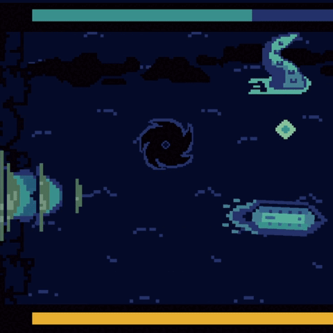
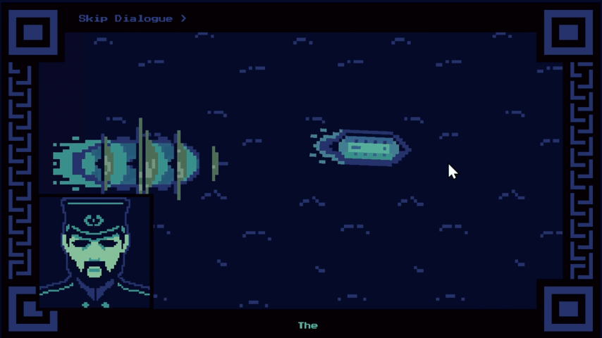
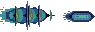
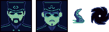
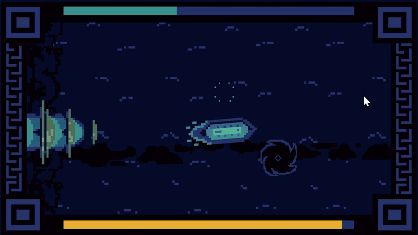

The Flying Dutchman
May 2025About Game
The Flying Dutchman is a side-scrolling chase game. The player captains a Union ironclad in 1862, fleeing a ghost ship through a storm of whirlpools, tentacles, and lightning.
➤ Entry for Pursuing Pixels James Jam Game Gam #4. Developed in 48 hours for the theme "Positioning."
➤ Role: Solo Developer & Artist
Solo Developer & Artist
I designed, programmed, and drew the entire game in Unity 2022.3 with C#.
- Built a position-based chase system where every hit pushes the player closer to the pursuing ship.
- Programmed three timed hazards: whirlpools, latching tentacles, and telegraphed lightning strikes.
- Implemented two-directional cannon fire for clearing tentacles.
- Scripted cutscenes with Unity Timeline, including a branching Yes/No choice and three endings.
- Wrote a typewriter dialogue system with speaker portraits and music crossfades.
- Drew all 2D pixel art and animations.
Mechanics
Position as Health
The player has no health bar. Instead, the ship's horizontal position is the health. The ship follows the mouse vertically through a lerp, while a target x-value sets how far ahead it is. Each hit lowers that value, pulling the ship back toward the Flying Dutchman, which tracks the player's height from the left edge. Falling past a threshold or touching the ghost ship triggers the bad ending. In the second phase, holding Shift pushes the target forward again.

Hazards
Each hazard has its own spawner on a timer.
- Whirlpools spawn at random heights, scroll left, and knock the ship back on contact.
- Tentacles rise from above or below the player's position. On contact they latch onto the ship, slowing it and dragging it back until it breaks free.
- Lightning first shows a warning on the water, then sweeps a row of strikes across the screen with camera shake.
The player fires cannonballs up or down (Z/X) on a 0.5-second cooldown. A cannonball destroys a tentacle on impact.
// PlayerMovement.cs// No health bar: xPos is how far ahead of the Flying Dutchman the ship is.// . . .private void updatePosition(){ // . . . (yMousePos = mouse height, clamped to the screen) // xPos sets the horizontal target; the lerp eases the ship toward it Vector2 targetPos = new Vector2(xPos, yMousePos); transform.position = Vector2.Lerp( transform.position, targetPos, Time.deltaTime * currentSpeed);}private void OnTriggerEnter2D(Collider2D collision){ // Whirlpool: knock the ship back toward the Flying Dutchman if (collision.gameObject.CompareTag("obstacle")) { // . . . (hit sound + camera shake) xPos -= hitXPos; } // Tentacle: knock back, slow down, and start dragging if (collision.gameObject.CompareTag("tentacle")) { // . . . dragBack = true; currentSpeed = slowerSpeed; xPos -= 1f; } // . . .}// . . .Cutscenes and Dialogue
The story runs on Unity Timeline, with an early Yes/No choice that branches the intro and three endings. Dialogue is typed out character by character, with portraits that switch between the captain and the lieutenant. Music crossfades between calm and chase tracks through coroutines called from the Timeline.

// DialogueBaseClass.cs// Types a line out one character at a time with a sound per letter,// then waits for a click before moving on.protected IEnumerator WriteText( string input, TMP_Text textHolder, float delay, AudioSource typeSound){ textHolder.text = ""; for (int i = 0; i < input.Length; i++) { textHolder.text += input[i]; typeSound.Play(); yield return new WaitForSeconds(delay); } yield return new WaitUntil(() => Input.GetMouseButton(0));}// DialogueReader.cs// Plays each line in order and swaps the speaker portrait// (0 = captain, 1 = lieutenant) before the line is typed.private IEnumerator startNewDialogue(){ foreach (string line in dialogueList) { if (shouldAvatar) { if (avatarList[i] == 0) { captain.SetActive(true); lieutenant.SetActive(false); } else { captain.SetActive(false); lieutenant.SetActive(true); } } yield return StartCoroutine( WriteText(dialogueList[i], textHolder, delay, typeSound)); i++; } // Dialogue finished: enable the next object and hide the portraits enableObject(); if (shouldAvatar) { captain.SetActive(false); lieutenant.SetActive(false); } gameObject.SetActive(false);}Art
I drew all of the game's art as 2D pixel art.
- The ironclad, the Flying Dutchman, and a storm effect.
- Animated cannonballs, whirlpools, tentacles, and lightning (warning and strike frames).
- Scrolling wave backgrounds and animated title and ending screens.
- Portraits of the captain and the lieutenant.


I chose a limited, cool color palette composed of blues and turquoise to imitate a mariner feel.
